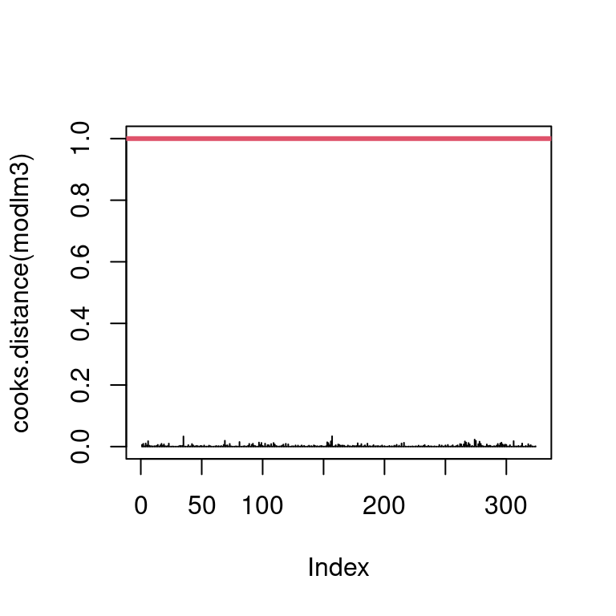

This document is a report on the analysis of a dataset on penguins. The data collected contains informations on multiples variables. The dataset was found on Kaggle : https://www.kaggle.com/datasets/utkarshx27/penguin-size-clutch-and-blood-isotope-data?select=penguins_raw.csv. This dataset was assemble from various articles according by Gorman et al.(Gorman 2014) and Horst et al.(Horst, Hill, and Gorman 2022). It focused on three penguin species : Adelie (Pygoscelis adeliae), Chinstrap (Pygoscelis antarcticus) and Gentoo (Pygoscelis papua). The dataset contains 344 observations and 17 variables. The goal of this analysis is to explore the dataset and to identify the main characteristics of the penguins.
Show the code
library(factoextra) # for data visualizationlibrary(FactoMineR) # for PCAlibrary(tidyverse) # for data manipulation and visualizationlibrary(dplyr) # for data manipulationlibrary(ggplot2) # for data visualizationlibrary(corrplot) # for correlation testlibrary(sf) # for spatial datalibrary(rnaturalearth) # for earth mapslibrary(rnaturalearthdata) # for earth datasetlibrary(ggspatial) # for spatial plotlibrary(gridExtra) # for arranging plotlibrary(kableExtra) # for enhanced tables
Location
Data were collected in Antarctica on Biscoe, Dream and Torgersen Islands. These three blue points show the location of the data collect in Figure 1.
Show the code
# Download country data (including Antarctica)world <-ne_countries(scale ="medium", returnclass ="sf")# Filter to keep only Antarcticaantarctica <- world[world$continent =="Antarctica", ]rectangle_coords <-st_as_sfc(st_bbox(c(xmin =-90, xmax =-55, ymin =-75, ymax =-60), crs =st_crs(4326)))antarctic_proj <-"+proj=laea +lat_0=-90 +datum=WGS84"# Transform the rectangle into the polar projection systemrectangle_proj <-st_transform(rectangle_coords, crs = antarctic_proj)# Create the mapgg_antartique =ggplot(data = antarctica) +annotate("rect", xmin =-90, xmax =-55, ymin =-75, ymax =-60,fill ="blue") +geom_sf() +coord_sf(crs ="+proj=laea +lat_0=-90 +datum=WGS84") +annotate("rect", xmin =st_bbox(rectangle_proj)["xmin"], xmax =st_bbox(rectangle_proj)["xmax"], ymin =st_bbox(rectangle_proj)["ymin"], ymax =st_bbox(rectangle_proj)["ymax"], alpha =0.2, fill ="blue")+theme_minimal() +labs(title ="Antarctica map",caption ="Data: Natural Earth") +annotation_scale(location ="bl", width_hint =0.5)antarctic_proj <-"+proj=laea +lat_0=-90 +datum=WGS84"# Point coordinates in longitude and latitudepoint_coords <-data.frame(lon =c(-66.209547, -64, -65), lat =c(-66, -65, -64.8))# Convert the point into an sf object (longitude/latitude coordinate system WGS84)point_sf <-st_as_sf(point_coords, coords =c("lon", "lat"), crs =4326)# Transform the point into the projected coordinate system of the mappoint_proj <-st_transform(point_sf, crs = antarctic_proj)# Extract the projected coordinates for use in annotatepoint_proj_coords <-st_coordinates(point_proj)# Create a bounding box manually with the coordinates# Convert the bounding box into an sf objectbbox_sf <-st_as_sfc(st_bbox(c(xmin =-90, xmax =-55, ymin =-75, ymax =-60)))# Crop the map using the bounding boxantarctica_cropped <-st_crop(antarctica, bbox_sf)# Create the mapgg_zone_interet =ggplot() +geom_sf(data = antarctica_cropped) +geom_sf(data = point_proj, color ="blue", size =3, alpha =0.8, shape =19) +coord_sf(crs ="+proj=laea +lat_0=-90 +datum=WGS84") +theme_minimal() +labs(title ="Area of Interest",caption ="Data: Natural Earth") +annotation_scale(location ="bl", width_hint =0.5)grid.arrange(gg_antartique, gg_zone_interet, ncol =2)
Figure 1: Maps of Antarctica with the collect points
Dataset presentation
Columns name :
studyName : sampling expedition from which data were collected, generated, etc.
Sample Number : an integer denoting the continuous numbering sequence for each sample
Species : a character string denoting the penguin species
Region : a character string denoting the region of Palmer LTER sampling grid
Island : a character string denoting the island near Palmer Station where samples were collected
Stage : a character string denoting the reproductive stage at the time of sampling
Individual ID : a character string denoting the unique ID for each individual in dataset
Clutch Completion : a character string denoting if the study nest was observed with a full clutch, i.e., 2 eggs
Date Egg : a date denoting the date study nest observed with 1 egg (sampled)
Culmen Length : a number denoting the length of the dorsal ridge of a bird’s bill (millimeters)
Culmen Depth : a number denoting the depth of the dorsal ridge of a bird’s bill (millimeters)
Flipper Length : an integer denoting the length penguin flipper (millimeters)
Body Mass : an integer denoting the penguin body mass (grams)
Sex : a character string denoting the sex of an animal
Delta 15 N : a number denoting the measure of the ratio of stable isotopes 15N:14N
Delta 13 C : a number denoting the measure of the ratio of stable isotopes 13C:12C
Comments : a character string with text providing additional relevant information for data
Loading dataset :
data <-read.table("penguins_raw.csv", sep ="," , header =TRUE, stringsAsFactors = T)summary(data)
X studyName Sample.Number
Min. : 1.00 PAL0708:110 Min. : 1.00
1st Qu.: 86.75 PAL0809:114 1st Qu.: 29.00
Median :172.50 PAL0910:120 Median : 58.00
Mean :172.50 Mean : 63.15
3rd Qu.:258.25 3rd Qu.: 95.25
Max. :344.00 Max. :152.00
Species Region Island
Adelie Penguin (Pygoscelis adeliae) :152 Anvers:344 Biscoe :168
Chinstrap penguin (Pygoscelis antarctica): 68 Dream :124
Gentoo penguin (Pygoscelis papua) :124 Torgersen: 52
Stage Individual.ID Clutch.Completion Date.Egg
Adult, 1 Egg Stage:344 N13A1 : 3 No : 36 2007-11-27: 18
N13A2 : 3 Yes:308 2007-11-16: 16
N18A1 : 3 2008-11-09: 16
N18A2 : 3 2009-11-18: 14
N21A1 : 3 2008-11-04: 12
N21A2 : 3 2008-11-06: 12
(Other):326 (Other) :256
Culmen.Length..mm. Culmen.Depth..mm. Flipper.Length..mm. Body.Mass..g.
Min. :32.10 Min. :13.10 Min. :172.0 Min. :2700
1st Qu.:39.23 1st Qu.:15.60 1st Qu.:190.0 1st Qu.:3550
Median :44.45 Median :17.30 Median :197.0 Median :4050
Mean :43.92 Mean :17.15 Mean :200.9 Mean :4202
3rd Qu.:48.50 3rd Qu.:18.70 3rd Qu.:213.0 3rd Qu.:4750
Max. :59.60 Max. :21.50 Max. :231.0 Max. :6300
NA's :2 NA's :2 NA's :2 NA's :2
Sex Delta.15.N..o.oo. Delta.13.C..o.oo.
FEMALE:165 Min. : 7.632 Min. :-27.02
MALE :168 1st Qu.: 8.300 1st Qu.:-26.32
NA's : 11 Median : 8.652 Median :-25.83
Mean : 8.733 Mean :-25.69
3rd Qu.: 9.172 3rd Qu.:-25.06
Max. :10.025 Max. :-23.79
NA's :14 NA's :13
Comments
Nest never observed with full clutch.: 34
Not enough blood for isotopes. : 7
Sexing primers did not amplify. : 4
No blood sample obtained for sexing. : 2
No blood sample obtained. : 2
(Other) : 5
NA's :290
# dim(data)
Names modification of columns and species :
Show the code
data <- data %>%select(-X) %>%# Remove X column select(-Comments) %>%# Remove Comments columnrename( # we rename the columns of the datasetsample_number = Sample.Number,id = Individual.ID,island = Island,region = Region,stage = Stage,clutch_completion = Clutch.Completion,date_egg = Date.Egg,culmen_length = Culmen.Length..mm.,culmen_depth = Culmen.Depth..mm.,flipper_length = Flipper.Length..mm.,body_mass = Body.Mass..g.,sex = Sex,delta_15_N = Delta.15.N..o.oo.,delta_13_C = Delta.13.C..o.oo.,species = Species)names(data)
The Figure 2 have a red line that represents the mean of missing values (NA) in the dataset and the bars are showing the number of NA’s for each variables.
Show the code
# Verification of missing valuescolSums(is.na(data))
studyName sample_number species region
0 0 0 0
island stage id clutch_completion
0 0 0 0
date_egg culmen_length culmen_depth flipper_length
0 2 2 2
body_mass sex delta_15_N delta_13_C
2 11 14 13
Show the code
data_NA <- data # Representation of missing valuesNA_df <- (colSums(is.na(data_NA)) /nrow(data_NA)) *100color_pal <-colorRampPalette(c("limegreen", "yellow", "firebrick"), bias =20)(10)NA_col <- color_pal[as.integer(NA_df/length(NA_df)*9)+1]# Graphiquebarplot(NA_df,ylab ="NA", col = NA_col, las=2, cex.names=0.6)NA_mean<-mean(NA_df)# 0.78% abline(h=NA_mean, col ="red", lwd =2)
Figure 2: Number of missing value as a function of each variables
Exploratory analysis
In this dataset, we would like to compare the different qualitative variables :
- Culmen Length
- Culmen Depth
- Flipper Length
- Body Mass
- Delta 13C
- Delta 15N
Correlation
To compare these qualitative variables, we begin by examining the correlations among them.
The representation of this matrix is not optimal.
sub_data_num = data%>%select(culmen_length, culmen_depth,flipper_length,body_mass,delta_13_C,delta_15_N)%>%na.omit() # we delete the few individuals with NAmatcor =cor(sub_data_num,method ="pearson")matcor
We can use the library corrplot to make some visual correlation matrix.
There is a correlation that we have to remove in a multivariate analysis between the body_mass variable and the flipper_length as we can see in Figure 3 and Figure 4.
Show the code
corrplot(matcor, method ="number", type ="upper",order ="hclust", tl.col="black", tl.srt=45)
Figure 3: Correlation matrix with numbers
Show the code
corrplot(matcor, type ="upper",order ="hclust", tl.col="black", tl.srt=45)
Figure 4: Correlation matrix with forms
Now, we want to observe whether certain qualitative variables have an effect on body mass. We will therefore try to create a graph for each factor (qualitative variables) according to body mass:
- Species
- Island
- Sex
We have noticed some trends in Figure 5 that we will have to confirm with statistical tests. Box1: Gentoo penguins appear to be heavier than the other two species. Box2: Penguins from Biscoe Island appear to be heavier than the other two islands. Box3: Male penguins appear to be heavier than the other two categories.
Show the code
box1 <-ggplot(data = data)+geom_boxplot(aes(x=species,y=body_mass, fill = species))box2 <-ggplot(data = data)+geom_boxplot(aes(x=island,y=body_mass, fill = island))box3 <-ggplot(data = data)+geom_boxplot(aes(x=sex,y=body_mass, fill = sex))global_box <-grid.arrange(box1,box2,box3)
Figure 5: Boxplots between body mass and other variables
Violin plot
Here is another way to visualize in Figure 6 the distribution between two variables.
Show the code
# Violin plot for Culmen Length (beak length)v1 <-ggplot(data, aes(x = species, y = culmen_length, fill = species)) +geom_violin(trim =FALSE) +geom_jitter(shape =16, position =position_jitter(0.2), color ="black", alpha =0.3) +stat_summary(fun = mean, geom ="point", shape =20, size =3, fill ="red", color ="red") +labs(title ="Distribution of Culmen Length by Species",x ="Species",y ="Culmen Length (mm)") +theme_minimal() +theme(legend.position ="none",plot.title =element_text(size =10, face ="bold"),axis.title.x =element_text(size =8), # Taille de l'axe xaxis.title.y =element_text(size =8))# Violin plot for Flipper Lengthv2 <-ggplot(data, aes(x = species, y = flipper_length, fill = species)) +geom_violin(trim =FALSE) +geom_jitter(shape =16, position =position_jitter(0.2), color ="black", alpha =0.3) +stat_summary(fun = mean, geom ="point", shape =20, size =3, fill ="red", color ="red") +labs(title ="Distribution of Flipper Length by Species",x ="Species",y ="Flipper Length (mm)") +theme_minimal() +theme(legend.position ="none",plot.title =element_text(size =10, face ="bold"),axis.title.x =element_text(size =8), # Taille de l'axe xaxis.title.y =element_text(size =8))# Violin plot for Body Massv3 <-ggplot(data, aes(x = species, y = body_mass, fill = species)) +geom_violin(trim =FALSE) +geom_jitter(shape =16, position =position_jitter(0.2), color ="black", alpha =0.3) +stat_summary(fun = mean, geom ="point", shape =20, size =3, fill ="red", color ="red") +labs(title ="Distribution of Body Mass by Species",x ="Species",y ="Body Mass (g)") +theme_minimal() +theme(legend.position ="none",plot.title =element_text(size =10, face ="bold"),axis.title.x =element_text(size =8), # Taille de l'axe xaxis.title.y =element_text(size =8))grid.arrange(v1, v2, v3, #names of graphs ncol =3, nrow =1)
Figure 6: Violin plot of body mass as function of many variables
ANOVA, U-Mann-Whitney tests, Student test
We run ANOVA and mean comparison tests to verify these differences.
There is a significant difference between the body mass of these 3 species, almost 2 of them, with a p-value of 2e-16.
# homoscedasticitybartlett.test(data$body_mass~data$species) # p = 0.05005 > 0.05 homoscedasticity conditions are satisfied
Bartlett test of homogeneity of variances
data: data$body_mass by data$species
Bartlett's K-squared = 5.9895, df = 2, p-value = 0.05005
anova1 =aov(data$body_mass~data$species)#normality of residualsshapiro.test(residuals(anova1)) #p = 0.05118 > 0.05, the normality of residuals is accepted
Shapiro-Wilk normality test
data: residuals(anova1)
W = 0.99166, p-value = 0.05118
summary(anova1)
Df Sum Sq Mean Sq F value Pr(>F)
data$species 2 146864214 73432107 343.6 <2e-16 ***
Residuals 339 72443483 213698
---
Signif. codes: 0 '***' 0.001 '**' 0.01 '*' 0.05 '.' 0.1 ' ' 1
2 observations deleted due to missingness
We perform a Tukey’s post-hoc test to see where the differences lie. There is a significant difference between the body mass of Gentoo and Adelie (p = 0) and Gentoo and Chinstrap (p = 0). There is no significant difference between Adelie and Chinstrap.
We cannot perform an ANOVA between body mass and islands because the homoscedasticity conditions are not satisfied, so we will perform a Kruskall-Wallis test. There is a significant difference between the body mass of these 3 islands, almost 2 of them, with a p-value of 2e-16.
# homoscedasticitybartlett.test(data$body_mass~data$island) # p = 8.978e-14 < 0.05 homoscedasticity conditions are not satisfied
Bartlett test of homogeneity of variances
data: data$body_mass by data$island
Bartlett's K-squared = 60.083, df = 2, p-value = 8.978e-14
$Biscoe
Shapiro-Wilk normality test
data: X[[i]]
W = 0.97247, p-value = 0.00209
$Dream
Shapiro-Wilk normality test
data: X[[i]]
W = 0.98889, p-value = 0.4161
$Torgersen
Shapiro-Wilk normality test
data: X[[i]]
W = 0.97185, p-value = 0.2636
# Biscoe: p = 0.00209 < 0.05, normality is not respected# Dream: p = 0.4161 > 0.05, normality is respected# Torgersen: p = 0.2636 > 0.05, normality is respected
Data normality is respected for Torgensen Island and Dream Island. We will therefore carry out a homoscedasticity test between these islands to determine the appropriate mean comparison test.
# Filter the data between the islandsdream_data <-subset(data, island =="Dream")$body_masstorgersen_data <-subset(data, island =="Torgersen")$body_massbiscoe_data <-subset(data, island =="Biscoe")$body_mass# Perform a variance test between the 'Dream' and 'Torgersen' groupsvar.test(dream_data, torgersen_data) # p = 0.5526 > 0.05, homoscedasticity conditions are satisfied
F test to compare two variances
data: dream_data and torgersen_data
F = 0.87619, num df = 123, denom df = 50, p-value = 0.5526
alternative hypothesis: true ratio of variances is not equal to 1
95 percent confidence interval:
0.5354096 1.3682404
sample estimates:
ratio of variances
0.8761931
We will therefore carry out two U-Mann-Whitney tests between the Biscoe and Torgersen Islands and the Biscoe and Dream Islands, and a Student t-test between the Dream and Torgersen Islands.
# U-Mann Withney test between the Biscoe and Torgersenwilcox.test(biscoe_data, torgersen_data) # p = 1.396e-14 < 0.05
Wilcoxon rank sum test with continuity correction
data: biscoe_data and torgersen_data
W = 7293, p-value = 1.396e-14
alternative hypothesis: true location shift is not equal to 0
# U-Mann Withney test between the Biscoe and Dreamwilcox.test(biscoe_data, dream_data) # p = 2.2e-16 < 0.05
Wilcoxon rank sum test with continuity correction
data: biscoe_data and dream_data
W = 17741, p-value < 2.2e-16
alternative hypothesis: true location shift is not equal to 0
# Student t-test between the Dream and Torgersent.test(dream_data, torgersen_data, var.equal = T) # p = 0.9265 > 0.05
Two Sample t-test
data: dream_data and torgersen_data
t = 0.092359, df = 173, p-value = 0.9265
alternative hypothesis: true difference in means is not equal to 0
95 percent confidence interval:
-133.0344 146.0958
sample estimates:
mean of x mean of y
3712.903 3706.373
There is a significant difference in body mass between Dream and Biscoe Islands (p = 2.2e-16) and between Torgersen and Biscoe Islands (p = 1.396e-14). There was no significant difference between Torgersen and Dream Islands.
As there are only two modalities for gender, instead of an ANOVA we will perform a U-Mann-Whitney mean comparison test. There is a significant difference between the body mass and the sex with a p-value of 1.813e-15.
$FEMALE
Shapiro-Wilk normality test
data: X[[i]]
W = 0.91931, p-value = 6.155e-08
$MALE
Shapiro-Wilk normality test
data: X[[i]]
W = 0.92504, p-value = 1.227e-07
# Female: p = 6.155e-08 < 0.05, normality is not respected# Male: p = 1.227e-07 < 0.05, normality is not respected# U-Mann Withney testfemale_data =subset(data, sex =="FEMALE")$body_massmale_data =subset(data, sex =="MALE")$body_masswilcox.test(female_data, male_data) # p = 1.813e-15 < 0.05
Wilcoxon rank sum test with continuity correction
data: female_data and male_data
W = 6874.5, p-value = 1.813e-15
alternative hypothesis: true location shift is not equal to 0
Distribution of species between the islands in Table 1 : we can see from this table that the Adelie species is present on all three islands, while the Chrinstrap and Gentoo species are only present on 2 islands, Dream and Biscoe respectively.
In Figure 7, it would appear that there is a positive linear trend between the body_mass variable and flipper_length for each species.
Show the code
ggplot(data, aes(x = flipper_length, y = body_mass, color = species))+geom_point()+scale_color_manual(values =c("#B2DF8A","#FDBF6F","#CAB2D6"))+geom_smooth(method ="lm", col ="red", se =TRUE)+theme_bw()+theme(legend.position ="none")+facet_grid(~species)
Figure 7: Flipper length as a function of body mass
Check with linear regression :
rl1 <-lm(body_mass ~ flipper_length + species + species:flipper_length, data = data)summary(rl1)
Call:
lm(formula = body_mass ~ flipper_length + species + species:flipper_length,
data = data)
Residuals:
Min 1Q Median 3Q Max
-911.18 -251.93 -31.77 197.82 1144.81
Coefficients:
Estimate Std. Error t value Pr(>|t|)
(Intercept) -2535.837 879.468 -2.883 0.00419 **
flipper_length 32.832 4.627 7.095 7.69e-12 ***
speciesChinstrap -501.359 1523.459 -0.329 0.74229
speciesGentoo -4251.444 1427.332 -2.979 0.00311 **
flipper_length:speciesChinstrap 1.742 7.856 0.222 0.82467
flipper_length:speciesGentoo 21.791 6.941 3.139 0.00184 **
---
Signif. codes: 0 '***' 0.001 '**' 0.01 '*' 0.05 '.' 0.1 ' ' 1
Residual standard error: 370.6 on 336 degrees of freedom
(2 observations deleted due to missingness)
Multiple R-squared: 0.7896, Adjusted R-squared: 0.7864
F-statistic: 252.2 on 5 and 336 DF, p-value: < 2.2e-16
These results show a highly significant effect of fin length for all species, with a greater effect for the Gentoo species. There was also a significant difference in body mass between species except between Adelie and Chinstrap.
In conclusion, we can say that fin length influences body mass and that this effect varies according to species.
It would appear that there is a positive linear trend between the body_mass variable and flipper_length for each species.
In the Figure 8, it would appear that there is a positive linear trend between the culmen_depth variable and culmen_length for each species.
Show the code
ggplot(data, aes(x = culmen_length, y = culmen_depth, color = species))+geom_point()+scale_color_manual(values =c("#B2DF8A","#FDBF6F","#CAB2D6"))+geom_smooth(method ="lm", col ="red", se =TRUE)+theme_bw()+theme(legend.position ="none")+facet_grid(~species)
Figure 8: Culmen length as a function of culmen depth
Check with linear regression :
rl2 <-lm(culmen_depth ~ culmen_length + species + species:culmen_length, data = data)summary(rl2)
Call:
lm(formula = culmen_depth ~ culmen_length + species + species:culmen_length,
data = data)
Residuals:
Min 1Q Median 3Q Max
-2.6574 -0.6675 -0.0524 0.5383 3.5032
Coefficients:
Estimate Std. Error t value Pr(>|t|)
(Intercept) 11.40912 1.13812 10.025 < 2e-16 ***
culmen_length 0.17883 0.02927 6.110 2.76e-09 ***
speciesChinstrap -3.83998 2.05398 -1.870 0.062419 .
speciesGentoo -6.15812 1.75451 -3.510 0.000509 ***
culmen_length:speciesChinstrap 0.04338 0.04558 0.952 0.341895
culmen_length:speciesGentoo 0.02601 0.04054 0.642 0.521590
---
Signif. codes: 0 '***' 0.001 '**' 0.01 '*' 0.05 '.' 0.1 ' ' 1
Residual standard error: 0.9548 on 336 degrees of freedom
(2 observations deleted due to missingness)
Multiple R-squared: 0.7697, Adjusted R-squared: 0.7662
F-statistic: 224.5 on 5 and 336 DF, p-value: < 2.2e-16
These results show that beak length is significant and positive in Adelie. In the species Chinstrap and Gentoo, the beak depth is smaller and is significant in Gentoo. At the interaction level, it is not significant, which means that the effect of beak length on depth is relatively the same for 3 species.
We can conclude that beak depth depends on beak length but this does not vary between species. Gentoo penguins have a shallower beak than the others.
In Figure 9, it seems to be different trends between species.
Show the code
ggplot(data, aes(x = delta_15_N, y = delta_13_C, color = species))+geom_point()+scale_color_manual(values =c("#B2DF8A","#FDBF6F","#CAB2D6"))+geom_smooth(method ="lm", col ="red", se =TRUE)+theme_bw()+theme(legend.position ="none")+facet_grid(~species)
Figure 9: Delta_15_N as a function of delta_13_C
We check this using a linear model :
rl3 <-lm(delta_13_C ~ delta_15_N + species + species:delta_15_N, data = data)summary(rl3)
Call:
lm(formula = delta_13_C ~ delta_15_N + species + species:delta_15_N,
data = data)
Residuals:
Min 1Q Median 3Q Max
-1.00888 -0.26656 -0.04769 0.20862 1.82777
Coefficients:
Estimate Std. Error t value Pr(>|t|)
(Intercept) -32.01429 0.77063 -41.543 < 2e-16 ***
delta_15_N 0.70093 0.08688 8.068 1.41e-14 ***
speciesChinstrap 8.28567 1.57149 5.273 2.46e-07 ***
speciesGentoo 15.64751 1.46204 10.702 < 2e-16 ***
delta_15_N:speciesChinstrap -0.78957 0.17013 -4.641 5.04e-06 ***
delta_15_N:speciesGentoo -1.89173 0.17387 -10.880 < 2e-16 ***
---
Signif. codes: 0 '***' 0.001 '**' 0.01 '*' 0.05 '.' 0.1 ' ' 1
Residual standard error: 0.4381 on 324 degrees of freedom
(14 observations deleted due to missingness)
Multiple R-squared: 0.6957, Adjusted R-squared: 0.691
F-statistic: 148.2 on 5 and 324 DF, p-value: < 2.2e-16
These results show that the relationship between nitrogen 15 and carbon 13 is positive and significant in Adelie, this relationship is reduced in Chinstrap and even more so in Gentoo. Chinstrap and Gentoo have significantly higher carbon-13 values than Adelie. The interactions between nitrogen 15 and the species are significant, showing that the effect of nitrogen 15 on carbon 13 varies according to the species.
In conclusion, this model shows that the effect of nitrogen 15 on carbon 13 is highly species-dependent, with differences between species.
Principal Component Analysis (PCA) of species characteristics
# Selection of quantitative datadata_numeric <-select_if(data, is.numeric)# Remove sample_number # The body_mass et the flipper_length are more than 80% correlated, we're deleting flipper_length because it's the data that's most correlated with all the other data.# names(data_numeric)data_numeric <- data_numeric %>%select(-c("sample_number","flipper_length"))# Normalizing datadata_scales <-scale(data_numeric)# PCA realizationacp_data=PCA(data_scales, graph = F)summary(acp_data)
Figure 10 is an histogram of the variance of the factorial axes with the percentage of inertia of each axis. Here, we keep 2 dimensions and 78.4% inertia.
Show the code
#Variance for each componentva_propre =fviz_eig(acp_data, main ="", choice ="variance",label_size =50, addlabels = T,barfill ="grey",barcolor ="grey")+ylim(c(0,60))va_propre
Figure 10: Barplot of eigen values
Figure 11 assess the absolut contribution of variables to each axis. We can see that three variables make a strong contribution to axis 1 (delta_15_N, body_mass and culmen_depth) and 2 to axis 2 (culmen_depth and delta_13_C).
Figure 11: Barplots of absolut contributions of axe 1 and 2
First graph (Figure 12) show the result of PCA on axes 1 and 2. A priori clustering by the Species has been performed. Gentoo penguins have a greater mass and a longer culmen. Adelie are lighter and have a depth culmen. Chinstrap penguins are the lightest and have a long, depth culmen. Adelie and Chinstrap penguins both have a high concentration of carbon 13 and nitrogen 15.
Show the code
#Projection of variables and individuals and differentiation according to speciesbi_plot =fviz_pca_biplot(acp_data, label="var", habillage=data$species, addEllipses = T,ellipse.alpha = F, ylim=c(-3,3.5), xlim =c(-3.5,3.5))+scale_color_manual(values =c("#B2DF8A","#FDBF6F","#CAB2D6"))+theme_minimal()+theme(legend.position ="bottom")grid.arrange(bi_plot, va_propre, c1, c2, #names of graphsncol =2, nrow =3, #How many row and colwidths =c(2.2,1), #Here, the first col will be bigger than the secondlayout_matrix =cbind(c(1,1,1), #On the first col only graph 1 for the 3 rowsc(2,3,4))) #On the second col, the 3 other graphs
Figure 12: Projection of variables and individuals according to species
Second graph (Figure 13) show the result of PCA on axes 1 and 2. A priori clustering by the Island has been performed. We can see that Gentoo penguins live only on Biscoe Island, while Chinstrap penguins live mainly on Dream Island. Adelie penguins live on these two islands and also on Togersen Island.
The common habitats of Chinstrap and Adelie penguins seem to explain the presence of isotopes in these two species, as they must find a similar diet.
Show the code
#Projection of variables and individuals and differentiation according to species bi_plot =fviz_pca_biplot(acp_data, label="var", habillage=data$island, addEllipses = T, ellipse.alpha = F, ylim=c(-3,3.5),xlim =c(-3.5,3.5))+scale_color_manual(values =c("#B2DF8A","#FDBF6F","#CAB2D6"))+theme_minimal()+theme(legend.position ="bottom") grid.arrange(bi_plot, va_propre, c1, c2, #names of graphs ncol =2, nrow =3, #How many row and col widths =c(2.2,1), #Here, the first col will be bigger than the second layout_matrix =cbind(c(1,1,1), #On the first col only graph 1 for the 3 rows c(2,3,4))) #On the second col, the 3 other graphs
Figure 13: Projection of variables and individuals and dfferentiation according to the islands
There is a significant difference between the body mass of these 3 species, almost 2 of them.
anova2 =aov(body_mass~island, data = data)summary(anova2)
Df Sum Sq Mean Sq F value Pr(>F)
island 2 86314512 43157256 110 <2e-16 ***
Residuals 339 132993186 392310
---
Signif. codes: 0 '***' 0.001 '**' 0.01 '*' 0.05 '.' 0.1 ' ' 1
2 observations deleted due to missingness
There is a significant difference between the body mass of these 3 islands, almost 2 of them.
Body mass model: an example of ANCOVA
ANCOVA (i.e. analysis of variance-covariance) is a statistic method that enable to model the relation between a dependent quantitative variable and several dependent explanatory variable that can be quantitative AND qualitative.
Here we aim to determine:
Which variable influence the penguins’ body mass of the penguins
What is the equation of the body mass model
We are selecting different variable of the data set that we think can influence the body mass: species, island, clutch_completion, culmen_length, culmen_depth, flipper_length, body_mass, sex, delta_15_N, delta_13_C. They are the explanatory variables. It is important to check the type (numeric or factor) of each variable and change if necessary.
We remove the individuals for which at least one measure is missing.
#selection of the interesting variablesdataLM<-data %>%select(species,island,clutch_completion,culmen_length,culmen_depth,flipper_length,body_mass,sex,delta_15_N,delta_13_C)#set the variable type (factors or numerics)dataLM$species<-as.factor(dataLM$species)dataLM$island<-as.factor(dataLM$island)dataLM$clutch_completion<-as.factor(dataLM$clutch_completion)dataLM$sex<-as.factor(dataLM$sex)dataLM$flipper_length<-as.numeric(dataLM$flipper_length)dataLM$body_mass<-as.numeric(dataLM$body_mass)str(dataLM)#check if there is missing values colSums(is.na(dataLM))#delete individual with missing valuesdataLM<-dataLM %>%drop_na(culmen_length,culmen_depth,flipper_length,body_mass,sex,delta_15_N,delta_13_C)
Data exploration
Before any modelisation, we have to explore the data to avoid some mistake. These are the different step to follow prior to execute a model:
Check for aberrant values and distribution shape of the response variable which is here body_mass.
If the explanatory variable is quantitative, check for aberrant values and distribution shape, and if the explanatory variable is qualitative, analyse the number mode and the number of individual in each one.
Analyse the potential relation between the response variable and the different explanatory variables.
Look for potential interaction between explanatory variables.
Check for potential colinearity between explanatory variables.
Figure 14: Distribution of the values of the variable body mass
We can see on the first graphic of the Figure 14 that there is no aberrant values for the variable body mass. The two other graphic of the figure show that there is a deviation of normality. However, normality of the response variable is not a requirement for ANCOVA.
Explanatory variables exploration
First we invastigate the distribution of the quantitative explanatory variables.
Figure 15: Distribution of the values of the explanatory variables
We can see on the first graphic of each row of the Figure 15 that there is no abberant values for the variable culmen_length, culmen_depth, flipper_length, delta_15_N and delat_13_C. The two other graphic of each row of the figure show that there is a deviation of normality for all explanatory variable. However, normality of the explanatory variable is not a requirement for ANCOVA.
Secondly we analyse the qualitative explanatory variables. We look at the distribution of the values in the different mode.
We observe that there is not the same number of observation in each mode so the plan is non orthogonal. This is not mandatory but it is best when the plan is orthogonal.
Secondly, we explore the dynamics between body mass (response variable) and the explanatory variable, to identify if there any potential trend.
Figure 16: Effect of the explanatories variables on the body mass
We can see on the Figure 16 that the variables culmen_length, culmen_depth, flipper_length, delta_15_N, species and island seems to influence the body mass. The body mass seems to increase when culmen_length, culmen_depth and flipper_length increase. On the opposite, body mass seems to decrease when delta_15_N increase. The species Gentoo and the individuals of the Biscoe Island seem to have a higher body mass.
Here we are considering a simple model with no interaction but in some case it can usefull to examine the potential interaction between the different variables.
In order to avoid colinearity in modelling, we analyse how the explanatories variables are related. To do so we calculate the correlation between the quantitative explanatories variables and evaluate if the qualitative explanatory variables impact the quantitative one using boxplot.
We chose a threshold of 0.7, to ensure there is no colinearity detected between the covariables.
First between covariable: the quantitative explanatories variables.
Figure 17: Corelation matrice between the covariables
The threshold above which we cosider there is colinearity is usually choose at +/- 0.7. We can thus see in the Figure 17 that there is no colinearity detected between the covariables.
Then between cofactors: the qualitative explanatory variables.
Show the code
# Checking collinearity between cofactors and covariablespar(mfrow=c(5,4))#Culmen length and speciesboxplot(dataLM$culmen_length~dataLM$species, varwidth =TRUE, ylab ="Culmen length", xlab ="Species", col='grey', main ="")#Culmen length and islandboxplot(dataLM$culmen_length~dataLM$island, varwidth =TRUE, ylab ="Culmen length", xlab ="Island", col='grey', main ="")#Culmen length and sexboxplot(dataLM$culmen_length~dataLM$sex, varwidth =TRUE, ylab ="Culmen length", xlab ="Sex", col='grey', main ="")#Culmen length and clutch completionboxplot(dataLM$culmen_length~dataLM$clutch_completion, varwidth =TRUE, ylab ="Culmen length", xlab ="Clutch completion", col='grey', main ="")#Culmen depth and speciesboxplot(dataLM$culmen_depth~dataLM$species, varwidth =TRUE, ylab ="Culmen depth", xlab ="Species", col='grey', main ="")#Culmen depth and islandboxplot(dataLM$culmen_depth~dataLM$island, varwidth =TRUE, ylab ="Culmen depth", xlab ="Island", col='grey', main ="")#Culmen depth and sexboxplot(dataLM$culmen_depth~dataLM$sex, varwidth =TRUE, ylab ="Culmen depth", xlab ="Sex", col='grey', main ="")#Culmen depth and clutch completionboxplot(dataLM$culmen_depth~dataLM$clutch_completion, varwidth =TRUE, ylab ="Culmen depth", xlab ="Clutch completion", col='grey', main ="")#Flipper length and speciesboxplot(dataLM$flipper_length~dataLM$species, varwidth =TRUE, ylab ="Flipper length", xlab ="Species", col='grey', main ="")#Flipper length and islandboxplot(dataLM$flipper_length~dataLM$island, varwidth =TRUE, ylab ="Flipper length", xlab ="Island", col='grey', main ="")#Flipper length and sexboxplot(dataLM$flipper_length~dataLM$sex, varwidth =TRUE, ylab ="Flipper length", xlab ="Sex", col='grey', main ="")#Flipper length and clutch completionboxplot(dataLM$flipper_length~dataLM$clutch_completion, varwidth =TRUE, ylab ="Flipper length", xlab ="Clutch completion", col='grey', main ="")#delta 15N and speciesboxplot(dataLM$delta_15_N~dataLM$species, varwidth =TRUE, ylab ="delta 15N", xlab ="Species", col='grey', main ="")#delta 15N and islandboxplot(dataLM$delta_15_N~dataLM$island, varwidth =TRUE, ylab ="delta 15N", xlab ="Island", col='grey', main ="")#delta 15N and sexboxplot(dataLM$delta_15_N~dataLM$sex, varwidth =TRUE, ylab ="delta 15N", xlab ="Sex", col='grey', main ="")#delta 15N and clutch completionboxplot(dataLM$delta_15_N~dataLM$clutch_completion, varwidth =TRUE, ylab ="delta 15N", xlab ="Clutch completion", col='grey', main ="")#delta 13C and speciesboxplot(dataLM$delta_13_C~dataLM$species, varwidth =TRUE, ylab ="delta 13C", xlab ="Species", col='grey', main ="")#delta 13C and islandboxplot(dataLM$delta_13_C~dataLM$island, varwidth =TRUE, ylab ="delta 13C", xlab ="Island", col='grey', main ="")#delta 13C and sexboxplot(dataLM$delta_13_C~dataLM$sex, varwidth =TRUE, ylab ="delta 13C", xlab ="Sex", col='grey', main ="")#delta 13C and clutch completionboxplot(dataLM$delta_13_C~dataLM$clutch_completion, varwidth =TRUE, ylab ="delta 13C", xlab ="Clutch completion", col='grey', main ="")
Figure 18: Exploration of potential colinearities between cofactors and covariable
According to the Figure 18 there is no colinearity between cofactors and covariables.
We keep all our explanatory variables to do the modelisation.
Model selection
For the statistic modelisation, we analyse first the full model, which means the model including all explanatories variables.
In order to identify the candidate model from the full model, we are going to use the backward selection model. This method is based on the significance of the model terms. From the full model, we identify the significance of each term of the model and proceed to a skimming of the non-sgnificant terms. The withdraw on the non significant term have to follow two step:
First step : remove successively the non significant interaction
Second step : remove successively the explanatory variable that are non significant and not include in interaction terms
First we build the full model:
modlm<-lm(body_mass ~ species + island + clutch_completion + culmen_length + culmen_depth + flipper_length + sex + delta_15_N + delta_13_C,data=dataLM) #full model
Using the function drop1 we analyse the significance of each variables:
drop1(modlm,test="F") #test significativté des variables avec test fischer
We exclude the variable island of the model, because it is the non-significant variable with the highest p-value. Then, we create a new model (without the variable island) and test for significance.
modlm2<-lm(body_mass ~ species + clutch_completion + culmen_length + culmen_depth + flipper_length + sex + delta_15_N + delta_13_C, data=dataLM)drop1(modlm2,test="F")
As previously, we exclude the variable clutch_completion of the model, because it is non-significant. We build a new model and test again for variables’ significance.
modlm3<-lm(body_mass ~ species + culmen_length + culmen_depth + flipper_length + sex + delta_15_N + delta_13_C, data=dataLM)drop1(modlm3,test="F")
All the variable in the model are significant, so we keep all of them in our final model. The best model is thus: \(body\:mass\) ~ \(species + culmen_{length} + culmen_{depth} + flipper_{length} + sex + delta\:15\:N + delta\:13\:C\)
Using the function summary we can acces the coefficient for all variable.
From the summary of the model we can also access the variance proportion that is explained by the model. It correspond to the variable of Adjusted R-squared which is here 0.8813. The model is thus explaining 88% of the body mass variance.
Model validation
The hypotheses for ANCOVA are independence, residuals normality and variance homogeneity. We also need to check for influent statistics unities, which means an observation with a high contribution to model construction.
Here, we assume an independence of variables as we don’t have the details of the data collection.
We can see on the first plot of Figure 19 that the histogram seems to have a normal distribution. This is confirmed by the second plot of the figure where we can see that the residuals are align with the red line, which means that the residuals have a normal distribution.
We check the homoscedasticity of residuals.
Show the code
# residuals vs fittedplot(residuals(modlm3)~fitted(modlm3) , col='dodgerblue3' , pch=16)abline(h =0)
Figure 20: verification of residuals homoscedasticity
We can see on the Figure 20 that there is no tendency on the point repartition. We can thus conclude that the variance is homogeneous.
We also verify that there is not individual that is particularly influential.
Show the code
par(mfrow =c(1, 1))plot(cooks.distance(modlm3), type ="h", ylim =c(0, 1))abline(h =1, col =2,lwd =3)

Figure 21: Verification of influential individual
As all the bar are lower that 1 on the Figure 21, we can conclude that there is no influential individuals.
Finally, we can conclude that the linear model is valid.
References
Gorman, Tony D. AND Fraser, Kristen B. AND Williams. 2014. “Ecological Sexual Dimorphism and Environmental Variability Within a Community of Antarctic Penguins (Genus Pygoscelis).”PLOS ONE 9 (3): 1–14. https://doi.org/10.1371/journal.pone.0090081.
Horst, Allison, Alison Hill, and Kristen B. Gorman. 2022. “Palmer Archipelago Penguins Data in the Palmerpenguins r Package - an Alternative to Anderson’s Irises.”The R Journal 14 (June): 244–54. https://doi.org/10.32614/RJ-2022-020.